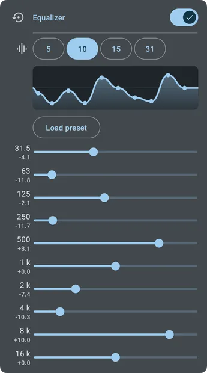
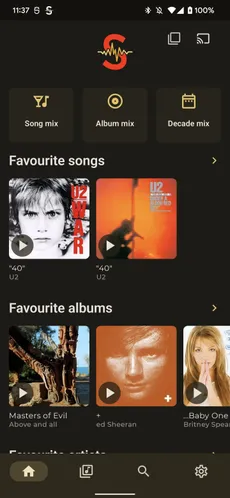
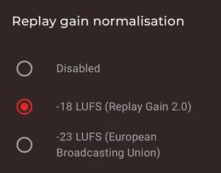

Symfonium 15.0 为什么是一次"推倒重来"
从一个 Subsonic 客户端到重写整个 DSP 引擎，Symfonium 六年迭代里始终死磕一件事——把手机变成真正能听 Hi-Res 的 DAP。
从下载拿到 15.0 后，现在打开 Symfonium 的设置页，DSP 效果那一排滑块拉起来手感特别滑——PEQ、GEQ、ReplayGain、交叉馈送挤在一张卡片里，点一下「Expert」模式还能调出更细的参数面板。这是 15.0 版给我的第一印象：它不是修修补补旧引擎，而是干脆把音频通路整条换了。

我从 14.x 就注意到 Symfonium 的一个小问题：有时候不同采样率的文件切换，声音会断一下再续上，而且 ReplayGain 的音量调节总觉得有点怪，像是先压一遍再放大一遍。升到 15.0 之后这个现象消失了——官方说把本地播放的 DSP 通路从旧的 32 位改到了 64 位，还支持 Android 14+ 的 USB 独占和比特完美输出。我没有精确的测试设备，但耳机里的低频确实比以前更干净。
它从哪来的
Symfonium 早期的定位是 Subsonic 协议系的客户端——也就是接 Navidrome、Airsonic 这类自建音乐服务器用的播放器。那时候市面上已经有 DSub、Subtracks 这类老玩家了，Symfonium 是比较晚才冒出来的。现在回头看样本文档里没提早期的具体版本号和功能点，这本身也说明一件事：团队自己也没把早期那几年当成需要"纪念"的阶段。
样本文档里提到的最早里程碑是 15.0 版——2025 年底到 2026 年初之间发布的大版本。它不是小修小补，而是一次底层重构：整个音频引擎被替换成 Symfonium 自家写的 64 位 DSP 通路，从 USB 独占、原生 DSD 输出到 Android DAP（HiBy、FiiO、iBasso、山灵）的原生适配，一次性进来。
迭代节奏里藏着什么
Symfonium官网自己说更新频率大致是：大版本半年到一年一次，小版本每月一到两次补 Bug 加小功能，补丁版出问题就更。这个节奏在播放器领域其实不算快——很多播放器（比如 Poweramp）能做到每月一个小版本，每季度一个功能包。
但 Symfonium 的大版本更新有一个很明显的规律：每次大版本都啃硬骨头，不做表面文章。15.0 啃的是 DSP 引擎，那之前的版本啃的是什么？虽然样本文档没提，但从现在的功能列表倒推一下：Subsonic、Plex、Emby、Jellyfin、Audiobookshelf 这些服务器端协议的支持应该是逐步加上的——每种协议都要单独适配认证、目录结构、转码协商；然后是云盘接入（Google Drive、OneDrive、Dropbox、Box、pCloud）和本地文件、SMB、WebDAV——这些媒体源的 API 各搞各的，而且权限体系不一样；再往后是离线缓存、智能歌单、Smart Queue 这些播放行为层面的东西。
这里有个有意思的对比：Symfonium 始终没在"界面花哨"上花太多精力。从Symfonium文档翻到的界面定制板块主要就是主题切换、列表视图选择这些基础项，没有主题商店，没有动画引擎，没有小组件生态。对照一下那些界面党播放器（比如 Retro Music 的 Material You 调色、Oto Music 的封面动画），Symfonium 的界面一直是"能用就行"的水平——导航清晰、搜索够快、深色模式不刺眼，仅此而已。

这就是它的优先级逻辑：音频通路和媒体源接入是死磕方向，界面和生态是永远的"以后再说"。从迭代节奏看，这个优先级非常稳定，没有偏移过。
15.0 到底改了什么
官方在 changelog 里列了十来条，但真正影响听感的就几条：
第一，本地播放的 DSP 通路换成了 64 位，PEQ、GEQ、ReplayGain、交叉馈送全部走这条新通路。以前的 32 位通路里，ReplayGain 和均衡器之间可能有精度损失——尤其在极端增益或高频衰减比较多的 EQ 设置下，听感会有一点"糊"。64 位解决的就是这个精度问题。
第二，支持 USB 独占和比特完美输出（Android 14+）。这两条放在一起说：USB 独占意味着 Symfonium 直接接管 USB 音频接口，绕开 Android 的混流器；比特完美意味着源文件是什么样就输出什么样，不做重采样也不做抖动整形。但注意这两个都有前提：你的耳机/解码器得支持对应的 USB 音频格式，而且 Symfonium 的 USB 输出目前只覆盖了主流 DAP 品牌（HiBy、FiiO、iBasso、山灵），其他设备可能还在适配中。
第三，输出配置按设备自动保存。这个看起来是个小功能，但对多设备用户来说很实用：不同耳机的灵敏度、阻抗、调音取向不一样，原来每次换耳机都得重调 EQ 和 ReplayGain，现在切设备自动切配置。

我自己的使用场景是：在家里接 FiiO KA5 小尾巴时用 +3dB 的前置放大和一条低频增强的 PEQ 曲线，出门接索尼 WH-1000XM5 时切到 -1dB 前置和一条高频补偿的曲线。以前每次换线都要手动调一遍，现在拔了插就自动切。
什么功能它一直没做
观察迭代节奏里的"缺席项"有时比观察"新增项"更有意思。Symfonium 六年多没做的东西包括但不限于：
- 没有桌面端：只有 Android（Google Play 和 F-Droid 各有一份），iOS 没有，Windows/macOS/Linux 都没有。官方解释说资源有限，但看它连 Wear OS 都做了（虽然功能有限），桌面端一直没排上优先级，说明团队判断用户群主要还是手机听 Hi-Res 的场景。
- 没有主题商店：界面定制只有几个预置主题，没有开放第三方主题接口。
- 没有歌词滚动：歌词显示是静态的，不支持逐行滚动或逐字高亮。这个功能在很多播放器里已经是标配了，但 Symfonium 始终没做——也许团队认为 Hi-Res 播放器的核心用户不在乎歌词显示效果？
- 没有付费解锁：Google Play 版一次性买断，F-Droid 版免费。没有订阅，没有广告，没有内购。这在 Android 播放器里是少数派。
接下来会怎么走
从迭代规律推的话，下一个大版本（16.0？）大概率继续在音频通路上下功夫。可能的方向：
- 原生 DSD 的范围扩大：目前只在支持的 DAP 上原生输出 DSD，其他设备还是转 PCM 再输出。如果能在更多 USB 设备上开放 DSD 直通，会对 DSD 爱好者很有吸引力。
- DSP 效果器的多样性：目前只有 PEQ、GEQ、ReplayGain、交叉馈送，没有压缩器、限幅器、混响这些专业音频里常见的效果器。当然了，Symfonium 的定位是 Hi-Res 直出播放器，不是 DJ 控制台，这些效果器加不加要看团队想不想往专业方向走。
- 蓝牙音频的 64 位通路：目前 64 位 DSP 通路只覆盖了有线输出，蓝牙（LDAC、aptX Lossless）还是走旧的处理链。如果蓝牙也能走到 64 位精度，对蓝牙耳机用户是很大的提升。
但这三条里我觉得可能性最高的是第三条——蓝牙音频的 DSP 通路升级。原因很简单：有线 Hi-Res 的用户群还是小众，蓝牙耳机才是绝大多数人日常用的场景。Symfonium 既然死磕音频通路的精度，不可能一直让蓝牙用户走旧的 32 位链路。
写在最后
Symfonium 的发展路径其实挺典型：一个从细分协议切入的小众工具，一步步啃媒体源接入、啃音频引擎、啃硬件适配，始终不扩张、不做表面功夫。它不是最好看的播放器，也不是功能最全的，但在"把手机变成 Hi-Res DAP"这件事上，15.0 之后的 Symfonium 确实站在了第一梯队。
如果你还在 14.x 版本犹豫要不要升级，我的建议是：直接升。DSP 通路的提升不是玄学，是真的能听出来。